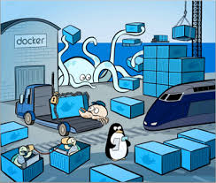

Por que usar Docker?
Docker tem sido um assunto bem comentado ultimamente, muitos artigos foram escritos, geralmente tratando sobre como usá-lo, ferramentas auxiliares, integrações e afins, mas muitas pessoas ainda fazem a pergunta mais básica quando se trata da possibilidade de utilizar qualquer nova tecnologia: “Por que devo usar isso?” Ou seria: “O que isso tem a me oferecer diferente do que já tenho hoje?”

É normal que ainda duvidem do potencial do Docker, alguns até acham que se trata de um hype. Mas nesse capítulo pretendemos demonstrar alguns bons motivos para se utilizar Docker.
Vale frisar que o Docker não é uma “bala de prata” - ele não se propõe a resolver todos problemas, muito menos ser a solução única para as mais variadas situações.
Abaixo alguns bons motivos para se utilizar Docker:
1 – Ambientes semelhantes
Uma vez que sua aplicação seja transformada em uma imagem Docker, ela pode ser instanciada como container em qualquer ambiente que desejar. Isso significa que poderá utilizar sua aplicação no notebook do desenvolvedor da mesma forma que seria executada no servidor de produção.
A imagem Docker aceita parâmetros durante o início do container, isso indica que a mesma imagem pode se comportar de formas diferentes entre distintos ambientes. Esse container pode conectar-se a seu banco de dados local para testes, usando as credenciais e base de dados de teste. Mas quando o container, criado a partir da mesma imagem, receber parâmetros do ambiente de produção, acessará a base de dados em uma infraestrutura mais robusta, com suas respectivas credenciais e base de dados de produção, por exemplo.
As imagens Docker podem ser consideradas como implantações atômicas - o que proporciona maior previsibilidade comparado a outras ferramentas como Puppet, Chef, Ansible, etc - impactando positivamente na análise de erros, assim como na confiabilidade do processo de entrega contínua, que se baseia fortemente na criação de um único artefato que migra entre ambientes. No caso do Docker, o artefato seria a própria imagem com todas as dependências requeridas para executar seu código, seja ele compilado ou dinâmico.
2 – Aplicação como pacote completo
Utilizando as imagens Docker é possível empacotar toda sua aplicação e dependências, facilitando a distribuição, pois não será mais necessário enviar uma extensa documentação explicando como configurar a infraestrutura necessária para permitir a execução, basta disponibilizar a imagem em repositório e liberar o acesso para o usuário e, ele mesmo pode baixar o pacote, que será executado sem problemas.
A atualização também é positivamente afetada, pois a estrutura de camadas do Docker viabiliza que, em caso de mudança, apenas a parte modificada seja transferida e assim o ambiente pode ser alterado de forma mais rápida e simples. O usuário precisa executar apenas um comando para atualizar a imagem da aplicação, que será refletida no container em execução apenas no momento desejado. As imagens Docker podem utilizar tags e, assim, viabilizar o armazenamento de múltiplas versões da mesma aplicação. Isso significa que em caso de problema na atualização, o plano de retorno será basicamente utilizar a imagem com a tag anterior.
3 – Padronização e replicação
Como as imagens Docker são construídas através de arquivos de definição, é possível garantir que determinado padrão seja seguido, aumentando a confiança na replicação. Basta que as imagens sigam as melhores práticas de construção para que seja viável escalarmos a estrutura rapidamente.
Caso a equipe receba uma nova pessoa para trabalhar no desenvolvimento, essa poderá receber o ambiente de trabalho com alguns comandos. Esse processo durará o tempo do download das imagens a serem utilizadas, assim como os arquivos de definições da orquestração das mesmas. Isso facilita a introdução de um novo membro no processo de desenvolvimento da aplicação, que poderá reproduzir rapidamente o ambiente em sua estação e assim desenvolver códigos seguindo o padrão da equipe.
Na necessidade de se testar nova versão de determinada parte da solução, usando imagens Docker, normalmente basta a mudança de um ou mais parâmetros do arquivo de definição para iniciar um ambiente modificado com a versão requerida para avaliação. Ou seja: criar e modificar a infraestrutura ficou bem mais fácil e rápido.
4 – Idioma comum entre Infraestrutura e desenvolvimento
A sintaxe usada para parametrizar as imagens e ambientes Docker pode ser considerada um idioma comum entre áreas que costumeiramente não dialogavam bem. Agora é possível ambos os setores apresentarem propostas e contra propostas com base em um documento comum.
A infraestrutura requerida estará presente no código do desenvolvedor e a área de infraestrutura poderá analisar o documento, sugerindo mudanças para adequação de padrões do seu setor ou não. Tudo isso em comentários e aceitação de merge ou pull request do sistema de controle de versão de códigos.
5 – Comunidade
Assim como é possível acessar o github ou gitlab à procura de exemplos de código, usando o repositório de imagens do Docker é possível conseguir bons modelos de infraestrutura de aplicações ou serviços prontos para integrações complexas.
Um exemplo é o nginx como proxy reverso e mysql como banco de dados. Caso a aplicação necessite desses dois recursos, você não precisa perder tempo instalando e configurando totalmente esses serviços. Basta utilizar as imagens do repositório, configurando parâmetros mínimos para adequação com o ambiente. Normalmente as imagens oficiais seguem as boas práticas de uso dos serviços oferecidos.
Utilizar essas imagens não significa ficar “refém” da configuração trazida com elas, pois é possível enviar sua própria configuração para os ambientes e evitar apenas o trabalho da instalação básica.
Dúvidas
Algumas pessoas enviaram dúvidas relacionadas às vantagens que explicitamos nesse texto. Assim, ao invés de respondê-las pontualmente, resolvemos publicar as perguntas e as respectivas respostas aqui.
Qual a diferença entre imagem Docker e definições criadas por ferramenta de automação de infraestrutura?
Como exemplo de ferramentas de automação de infraestrutura temos o Puppet, Ansible e Chef. Elas podem garantir ambientes parecidos, uma vez que faz parte do seu papel manter determinada configuração no ativo desejado.
A diferença entre a solução Docker e gerência de configuração pode parecer bem tênue, pois ambas podem suportar a configuração necessária de toda infraestrutura que uma aplicação demanda para ser implantada, mas achamos que uma das distinções mais relevante está no seguinte fato: a imagem é uma abstração completa e não requer qualquer tratamento para lidar com as mais variadas distribuições GNU/Linux existentes, já que a imagem Docker carrega em si uma cópia completa dos arquivos de uma distribuição enxuta.
Carregar em si a cópia de uma distribuição GNU/Linux não costuma ser problema para o Docker, pois utilizando o modelo de camadas, economiza bastante recurso, reutilizando as camadas de base. Leia esse artigo para entender mais sobre armazenamento do Docker.
Outra vantagem da imagem em relação a gerência de configuração é que, utilizando a imagem, é possível disponibilizar o pacote completo da aplicação em um repositório e, esse “produto final”, ser utilizado facilmente sem necessidade de configuração completa. Apenas um arquivo de configuração e um comando custumam ser suficientes para iniciar uma aplicação criada como imagem Docker.
Ainda sobre o processo de imagem Docker como produto no repositório: pode ser usado também no processo de atualização da aplicação, como já explicamos nesse capítulo.
O uso da imagem base no Docker de determinada distribuição não é o mesmo que criar uma definição de gerência de configuração para uma distribuição?
Não! A diferença está na perspectiva do hospedeiro. No caso do Docker não importa qual distribuição GNU/Linux é utilizada no host, pois há uma parte da imagem que carrega todos os arquivos de uma mini distribuição que será suficiente para suportar tudo que a aplicação precisa. Caso seu Docker host seja Fedora e a aplicação precisar de arquivos do Debian, não se preocupe, pois a imagem em questão trará arquivos Debian para suportar o ambiente. E, como já foi dito anteriormente, isso normalmente não chega a impactar negativamente no consumo de espaço em disco.
Quer dizer então que agora eu, desenvolvedor, preciso me preocupar com tudo da Infraestrutura?
Não! Quando citamos que é possível o desenvolvedor especificar a infraestrutura, estamos falando da camada mais próxima da aplicação e não de toda a arquitetura necessária (Sistema operacional básico, regras de firewall, rotas de rede e etc).
A ideia do Docker é que os assuntos relevantes e diretamente ligados a aplicação possam ser configurados pelo desenvolvedor. Isso não o obriga a realizar essa atividade. É uma possibilidade que agrada muitos desenvolvedores, mas caso não seja a situação, pode ficar tranquilo, outra equipe tratará dessa parte. Apenas o processo de implantação será pouco mais lento.
Muitas pessoas falam de Docker para micro serviços. É possível usar o Docker para aplicações monolíticas?
Sim! Porém, em alguns casos, é necessário pequenas modificações na aplicação, para que ela possa usufruir das facilidades do Docker. Um exemplo comum é o log que, normalmente, a aplicação envia para determinado arquivo, ou seja, no modelo Docker as aplicações que estão nos containers não devem tentar escrever ou gerir arquivos de logs. Ao invés disso, cada processo em execução escreve seu próprio fluxo de evento, sem buffer, para o stdout, pois o Docker tem drivers específicos para tratar o log enviado dessa forma. Essa parte de melhores práticas de gerenciador de logs será detalhada em capítulos posteriores.
Em alguns momentos você perceberá que o uso do Docker para sua aplicação demanda muito esforço. Nesses casos, normalmente, o problema está mais em como a aplicação trabalha do que na configuração do Docker. Esteja atento.
Tem mais dúvidas e/ou bons motivos para utilizar Docker? Comente aqui.